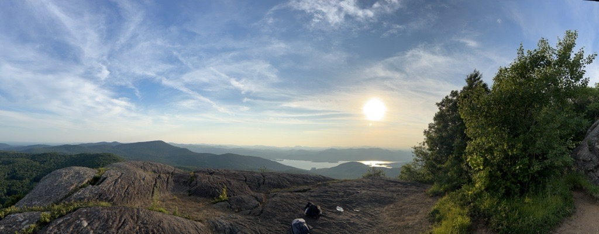
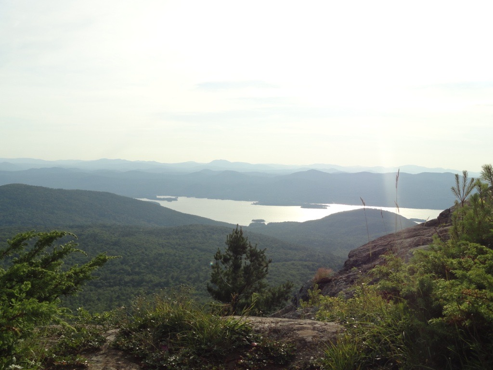
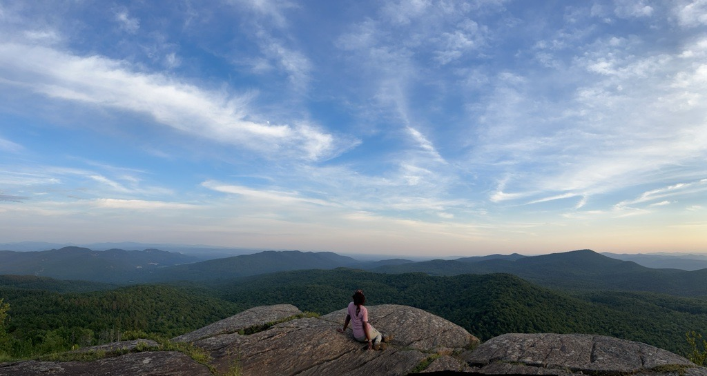
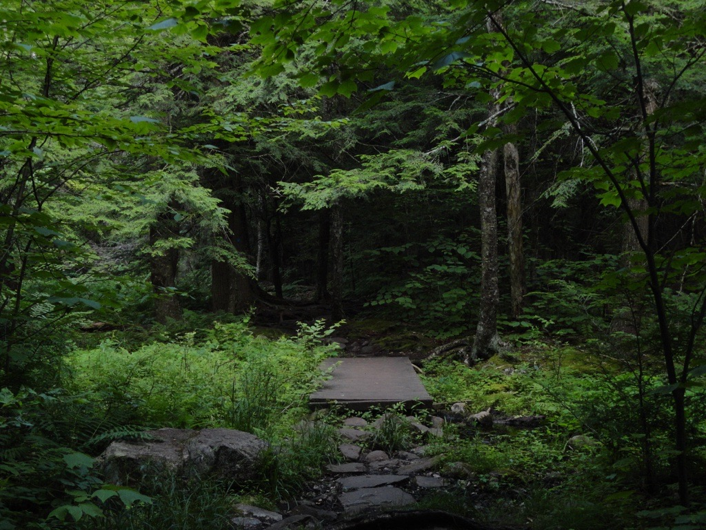

In each passing moment, I picture myself roaming beautiful mountains, rolling hills, and expansive prairies. Each time I blink, you can expect a vision of lush green Earth to appear. Last year, I decided that re-wilding my life and surrondings will be my number one priority. In honor of my newly found liberation, I decided to celebrate independence day by finally getting out to my first real mountain, Sleeping Beauty. The hike was strenuous, and I could hardly breathe, but the summit was truly phenominal. The dopamine and pure rush of finally making it to the top was a feeling I could never forget. Since then, I've been awaiting my next mountain!
Sleeping Beauty Mountain, located within the Adirondack Mountains region near Lake George, supports a diverse range of native plant species typical of northeastern hardwood and mixed conifer forests. Common native vegetation found along the trail and surrounding forests includes eastern hemlock, balsam fir, sugar maple, white birch, ostrich fern, and various mosses and ferns adapted to cool, moist mountain environments. Wildflowers such as trout lily and blue flag iris are also native to the Adirondacks and contribute to the region’s biodiversity. These plant communities play an important ecological role by stabilizing soils, supporting pollinators, regulating moisture, and providing habitat for wildlife throughout the mountain ecosystem.
This forest and plant communities that surround Sleeping Beauty Mountain significantly contribute to the ecological health of the Adirondack region. Native trees like sugar maple, eastern hemlock, and balsam fir help regulate local climate conditions by storing carbon dioxide and maintaining moisture levels within the forest ecosystem.The mountain’s vegetation also helps prevent soil erosion along steep slopes and trails while filtering rainwater before it enters nearby lakes and streams, including the Lake George watershed. Additionally, native plants provide food and shelter for pollinators, birds, amphibians, and mammals, supporting biodiversity throughout the region. Healthy mountain ecosystems like Sleeping Beauty play an essential role in maintaining water quality and ecological stability in the Adirondacks.
Sleeping Beauty Mountain and the surrounding Adirondack ecosystems face several environmental threats, many of which are linked to climate change and increased recreational use. Rising temperatures can alter forest composition by stressing cold-adapted species such as balsam fir and eastern hemlock while encouraging invasive species and forest pests. Heavy foot traffic from hikers can also contribute to soil erosion, damaged vegetation, and trail widening, particularly during wet seasons. Invasive species such as emerald ash borer and hemlock woolly adelgid threaten native tree populations throughout New York forests. Additionally, changing precipitation patterns and stronger storms may impact water quality and ecosystem stability in the Lake George watershed.
Adirondack Council. (n.d.). Plants. https://www.adirondackcouncil.org/about-the-park/plants/ Adirondack Council. (2019). Why you should help protect native pollinators and grow native plants. https://www.adirondackcouncil.org/why-you-should-help-protect-native-pollinators-and-grow-native-plants Adirondack Mountain Club. (n.d.). Leave No Trace and trail stewardship. https://adk.org/ Environmental Protection Agency. (n.d.). Climate impacts on ecosystems. https://www.epa.gov/climateimpacts/climate-impacts-ecosystems Garden Guides. (2022). List of native plants in the Adirondack Mountains. https://www.gardenguides.com/95142-list-native-plants-adirondack-mountains/ Lake George Association. (n.d.). Protecting the Lake George watershed. https://www.lakegeorgeassociation.org/ New York State Department of Environmental Conservation. (n.d.). Adirondack forest preserve. https://dec.ny.gov/ New York State Department of Environmental Conservation. (n.d.). Forest health. https://dec.ny.gov/nature/forests-trees/forest-health